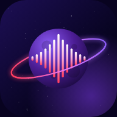

Music
LSP
Завантаження даних…
M
ТВОЯ МУЗИКА ЩОДНЯ
MusicLSP
Admin
Free
MUSICLSP / DISCOVERY
Відкривай
своє звучання
Жанри, настрої та музика, яку варто почути.
Усе
Жанри
Треки
Альбоми
Артисти
Суспільне надбання
За збігом
Популярні
Новинки
Що поставити?
Каталог — незалежні артисти під Creative Commons. Спробуйте жанр: lofi, jazz, synthwave, folk.
YOUR SOUND / COLLECTION
Твоя колекція
Усе, що хочеш зберегти поруч.
❤️ Збережене
▤ Плейлисти
◷ Прослухано
✦ Моменти
—
—
Головна
Пошук
Бібліотека
Створити
—
—
🔖
0:00
0:00
⋯
🛠 Адмін-панель
Огляд
Юзери
Скарги
Промокоди
Розсилка
Система
Журнал